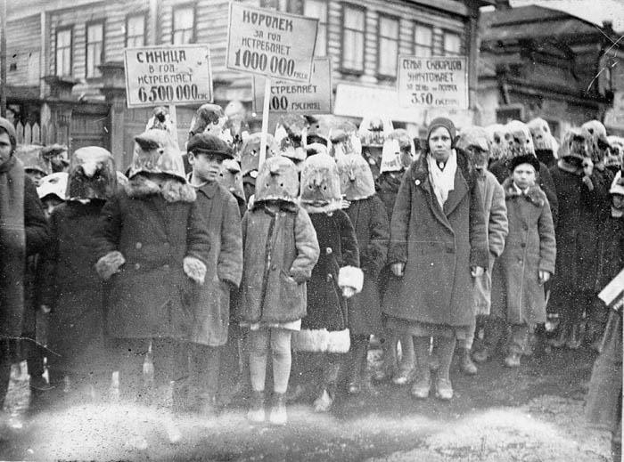

Sunday, March the 17th, 2013
back to: title, date or indexes
I am indebted to Ruth Bosch for drawing to my attention this photograph from Paraphilia Magazine, captioned “Russian children taking part in a parade celebrating birds helpful to farming, 1934”. It is instructive to realise that Soviet Communism was not an unalloyed disaster, at least in ornithological terms. Needless to say, I am agog to learn precisely which birds were deemed “helpful to farming”. Skylarks? Peewits? Pratincoles? Any readers equally expert in birds and Bolshevism should contact me immediately.
